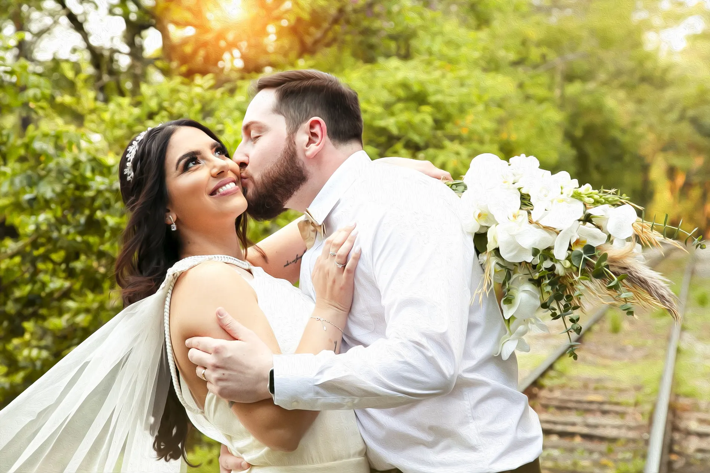
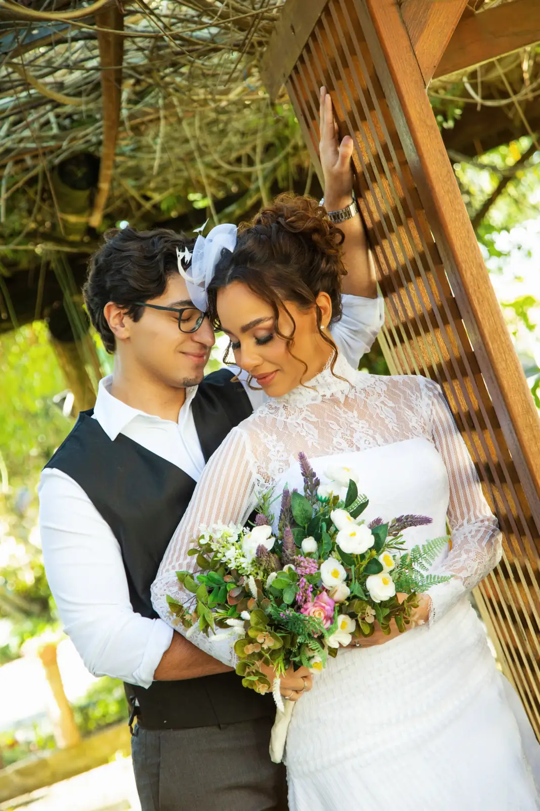

Guia completo com as perguntas certas para fazer antes de fechar contrato.

Uma visão realista dos fatores que influenciam o investimento na fotografia do seu casamento.

O passo a passo de quem sonha em casar em cenários históricos italianos.

Clima, luz e estações do ano: entenda quando a paisagem — e as fotos — ficam ainda mais bonitas.
Em breve
Uma visão realista dos principais custos envolvidos — cerimônia, convidados, fornecedores e imprevistos.
Em breve
Cerimônias íntimas, em cenários reais perto de Curitiba, com o casal e pouquíssimos convidados — ou nenhum.

Parques, jardins, centro histórico e opções de litoral perto de Curitiba para o seu ensaio.
Mais artigos estão a caminho. Enquanto isso, tire suas dúvidas direto com a gente pelo chat ou pelo WhatsApp.